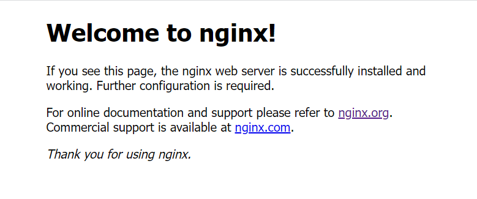

安装 Nginx
|
|
开放端口
开放80与443端口（分别表示http端口与https端口）
|
|
访问
在浏览器输入你的服务器ip进行访问，和下图一样就表示成功啦www
上传静态页面
|
|
此时你的静态页面就存放在 /var/www/<仓库名称> 中啦
Nginx 配置介绍
这里只是简单介绍下基础概念，后面会有详细步骤的说
/etc/nginx/ 路径下存放nginx配置文件
我们主要看这三个文件
|
|
sites-available目录中存放不同的服务器块配置文件（里面默认有一个default文件）
每个服务器块配置文件都关联一个独立的域名，根目录（在这里指的是静态页面目录）
配置好后，需要把服务器块配置链接到nginx配置（modules-enabled目录）中，使其生效
说明：默认服务器块配置并不需要手动链接到nginx配置，因为它是自动完成的，反之则需要手动链接nginx配置
如何判断是否为默认服务器块配置呢？
打开服务器块配置文件如果看见监听端口后面有default_server则表示是默认服务器块配置文件
如下所示
|
|
注意：只能有一个默认服务器块配置文件，访问服务器ip地址默认加载的是默认服务器块配置文件
nginx.conf 文件表示nginx总配置文件
创建服务器块（server block）
|
|
其中example.com是你的域名
输入 i 切换到 输入模式
添加以下代码模板
|
|
root 表示你的静态文件存放目录
server_name 表示你的域名
最后，键入 esc 切换到 命令模式
输入指令 :wq 表示保存退出
由于默认服务器块只能有一个，你还需要编辑该目录的default文件
|
|
把里面的 default_server 删除掉就可以啦
|
|
链接 nginx 配置
|
|
example.com 是你的域名
编辑总配置文件
打开 nginx.conf 文件
|
|
找到以下内容并取消注释
|
|
server_names_hash_bucket_size 表示增加为解析域名所分配的内存
刷新 nginx 配置
检查语法是否有错
|
|
若输出以下代码，则表示没有问题
|
|
刷新配置文件
|
|
打开浏览器，刷新你的服务器ip地址就可以看到你的静态页面啦！！
如果服务器ip可以访问，域名却无法访问，可以看看你的域名提供商是否配置好dns解析
获取Let’s Encrypt SSL证书
安装 cerbot 包
|
|
获取证书
|
|
you@example.com 表示你的邮箱地址
example.com 表示你的域名
现在你的域名将会使用https协议啦！
自动续订证书
设置 cron 作业
|
|
如果没有问题，打开crontab
|
|
这个时候应该会有3个选项，选择你熟悉的编辑器
然后编辑文件，指定处理时间
|
|
表示在每天的4点5分检查证书，如果证书需要续订，脚本将自动更新它
如果你不想和我一样，可以在这里随机一个自己喜欢的时间点 crontab
使用 gzip 优化 nginx
gzip 是压缩数据的方法，使用它可以提高网站速度，减少负载
同时也能提高测速平台的性能分数！！
nginx 默认是开启 gzip 的，但需要一些其他配置
基础配置
打开 nginx 的总配置文件
|
|
找到以下内容并取消注释
|
|
高级配置
一般使用基础配置就可以啦，高级设置的提速，反正我是感觉不到的qwq
|
|
gzip_comp_level 表示压缩级别（0~9），值越高，压缩级别也就越高，cpu算力也就越高（建议保持中等水平4）
gzip_min_length 表示压缩的内容最小为多少字节（建议不要小于1000字节，因为可能会导致文件变大）
检查语法是否正确
|
|
刷新一下配置文件
|
|
完成！！